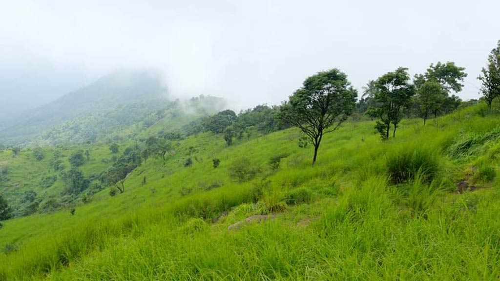
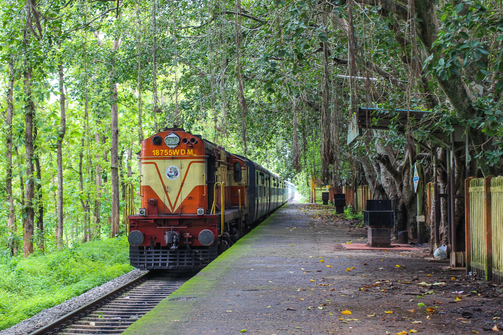
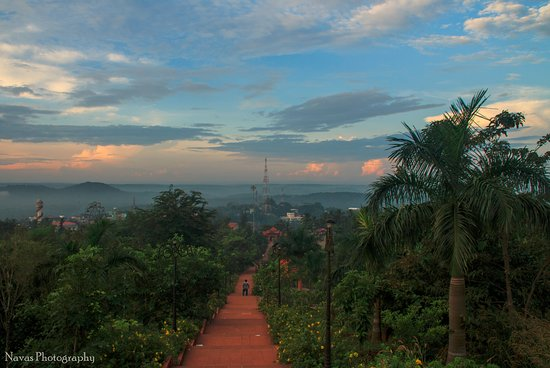
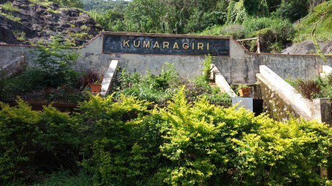
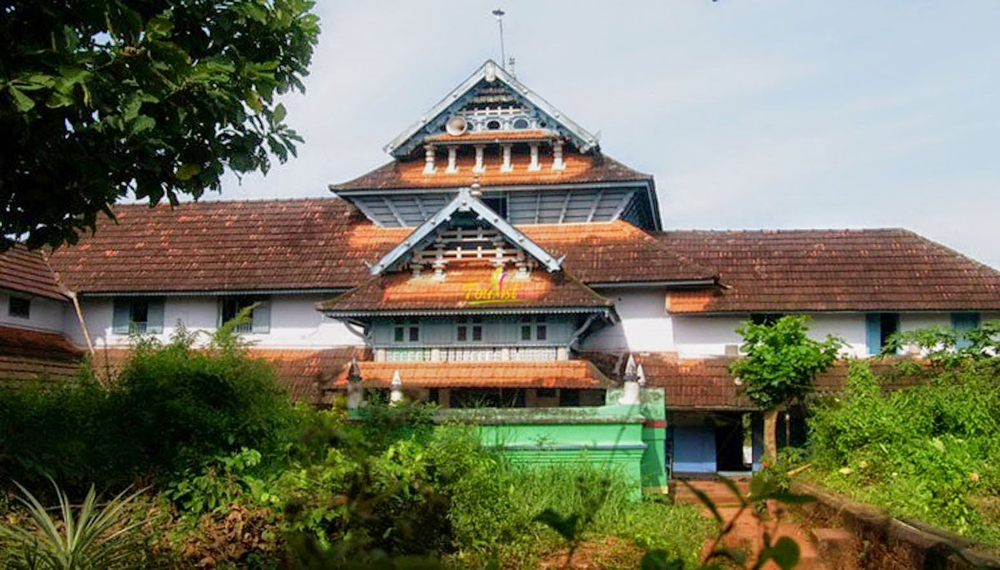
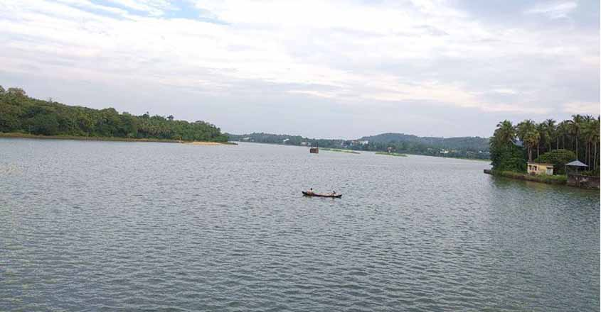

MINI OOTY
Arimbra Hills, popularly known as the Mini Ooty is a tourist spot in Malappuram. It is an ideal place to feel the clouds and to watch sunset. Located at a height of 1050 ftabove sea level, the place attracts large number of visitors for its rolling hills and scenic views. Arimba hills also have Thiruvonamala, Poolappees, Muchikundu, Cheruppadi Mala, Kunnumpuram and Kakkadseemly for hiking. One of the mesmerizing views from these hiking spots is the runway of Kozhikode International airport.

NILAMBUR TEAK MUSESEUM
Kerala has had a long association with teak and has always played a central role in its cultivation and trade. The word teak itself is said to have come from the Malayalam word 'theku'. The Teak Museum in Nilambur celebrates this ancient relationship and takes one on a special journey through history, chronicling teak and its importance in our culture.

KOTTAKKUNNU
Traces of an old fort, a water-park and ancient murals are some of the delightful attractions of Kottakkunnu in Malappuram. Steeped in history, this area is famous for its friendly and peaceful vibe. The fort was incidentally the first to be built by the Zamorins (rulers) of Kozhikode. The murals at the Vettakkorumakan Temple and the Siva Temple are another source of intrigue in the area.

KUMARAGIRI FARM & NATURE CAMP
Kumaragiri Farm Nature Camp offers free breakfast. The accommodationin Malappuram islocated in Mankada, 8 km from the Angadippuram Railway Station.It also offers5 rooms with a double bed and wardrobe. The attached bathrooms have modernfittings and a supply of running hot and cold water. The hotel also provides24-hour front desk and room service for limited hours.The farmhousein Malappuram also featuresa multi-cuisine restaurant and a garden. The accommodation is also accompanied with facilities like luggage storage and laundry. Indoorgames of chess, carom, cards and table tennis are organized. Patrons can also trek theplantations guided by the sign posts.Guests can also visit the Mudumalai National Park (93 km), Guruvayoor Krishna Temple (65 km) and Silent Valley National Park (43 km) from the farmhouse. The KuttipuramRailway Station is about 35 km away while the Calicut International Airport is37 km from the KumaragiriFarm Nature Camp.

MAMBURAM MOSQUE
A famous Muslim Pilgrimage in the Malappuram district, Mamburam is a shrine dedicated to the dead bodies of some of the primary Thangals of Kerala. It was a title given to the Arabs from Yemen who scattered from there and migrated to Kerala.
They held great importance to the locals of Kerala and thus, had this shrine dedicated to them. A local festival held here during the time of Muharram is one of the primary attractions of this place.

BHARATHAPUZHA RIVER
The River of Bharata, also known as Nila, the Bharathapuzha River is a west-flowing river in the state of Kerala, and is the second longest river in the state. The river has been an integral part of life in the southern regions of Malabar. The name Nila has been given to the river to show the importance of it being more than just a river, as there are several mentions of the river in the ancient Hindu scriptures.